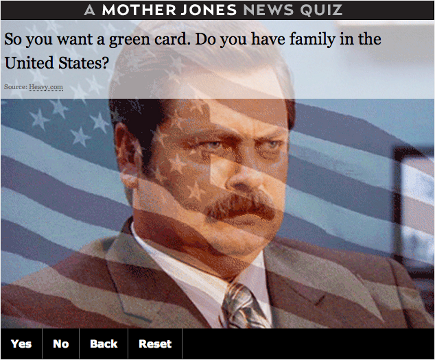
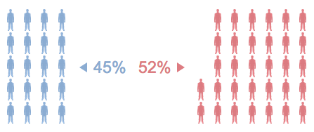
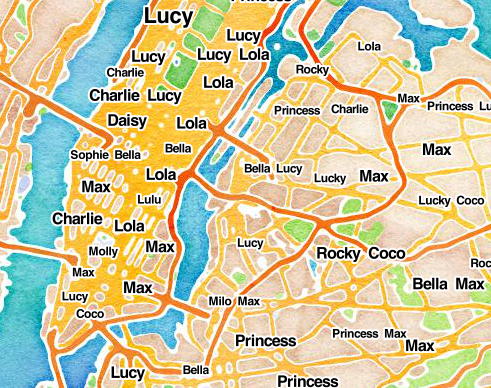
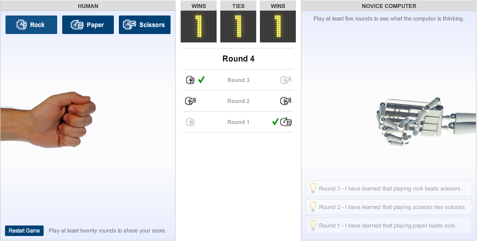

Making interactives fun
@TasneemRaja
/
@SisiWei
Immigration Maze - Mother Jones

Where Americans Stand - Washington Post

Dogs of NYC - WNYC

Rock Paper Scissors - New York Times

Could you be a medalist - Guardian Interactive